Windows release
Download the latest signed release asset from GitHub Releases.
powershell -ExecutionPolicy Bypass -File .\scripts\install-windows.ps1

agent-ctrlNative computer-use primitives
A fast Rust CLI and TypeScript interface for agents that need to inspect, click, type, wait, and screenshot real desktop apps.
agent-ctrl open uia
agent-ctrl snapshot --target-process Obsidian
agent-ctrl find --role button --first
agent-ctrl click @e4
agent-ctrl wait-for --stableDesigned for the core agent loop
agent-ctrl exposes native UI through stable JSON shapes instead of app-specific scripts. Agents read an accessibility tree, resolve refs, execute small actions, and verify state before moving on.
Install
Download the latest signed release asset from GitHub Releases.
powershell -ExecutionPolicy Bypass -File .\scripts\install-windows.ps1
Use the typed stdio client when building agents in Node.js.
npm install @agent-ctrl/client
Native surfaces
Production-grade native automation with inspect, action, wait, screenshots, window switching, JSON mode, and fixture-backed tests.
Focused-window snapshots plus window listing and raise support. Element actions come next after runtime validation on macOS.
The shared Surface trait is ready for the next native backends without pulling browser automation into this project.
Keep browser automation in agent-browser. Use agent-ctrl for the rest of the machine.
Star on GitHub